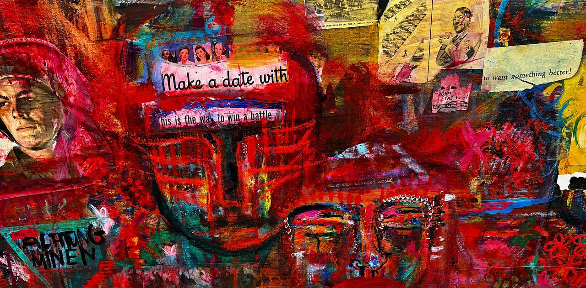
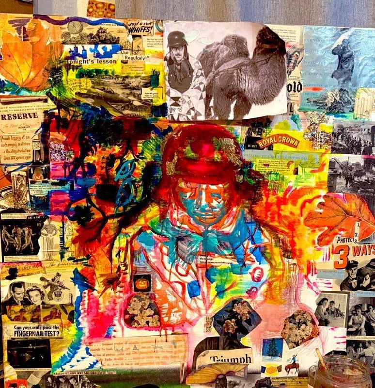
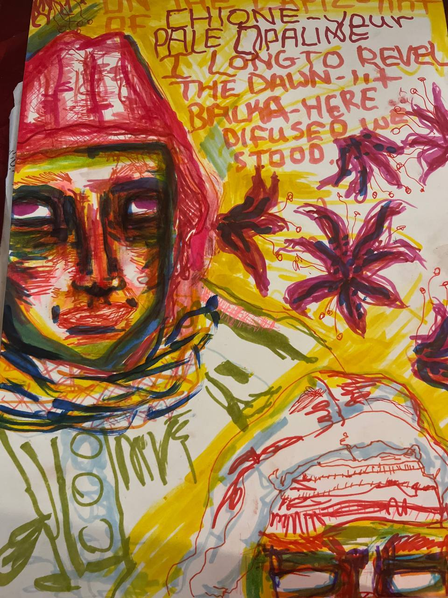
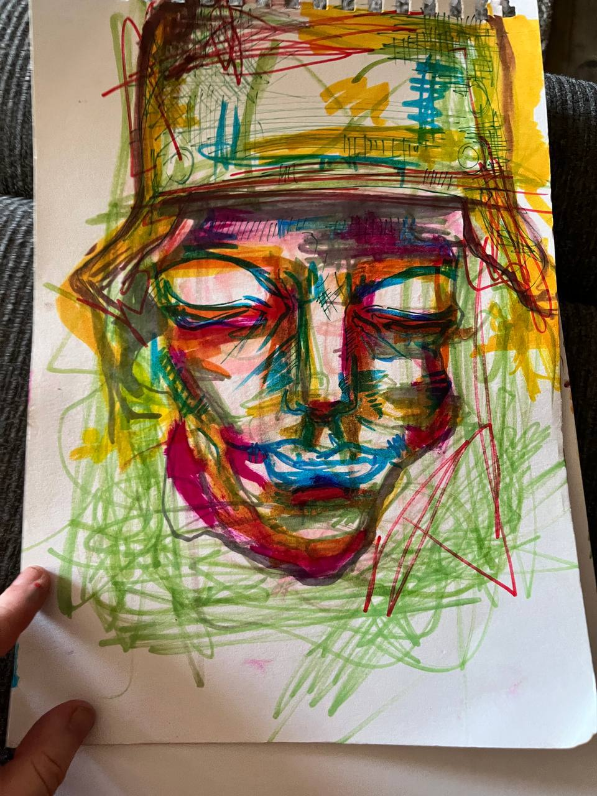

Operational Histories
David M. Glantz
Antony Beevor
Jason D. Mark
Nik Cornish
Erhard Raus
archival witness project
LETHE
THE FRONT DID NOT END
A long-form archival body of work centered on the Eastern Front of the Second World War, with Stalingrad as its gravitational center.
The project proceeds from the understanding that certain historical conditions do not remain contained within chronology. They continue exerting pressure across generations: visually, psychologically, materially.
The work approaches the front not as distant history, but as a living unresolved interior.
The figures that emerge are not symbols or reenactments. They remain singular presences suspended between document and erasure.
Many never saw the photographs that now carry them.
The enclosure holds.
Betreten der Stadt ist verboten.
project statement
You Are Still Inside It is a long-form, research-driven body of work centered on Stalingrad and the Eastern Front.
It does not illustrate history.
It constructs a historical interior where unresolved presences remain active.
The figures are not treated as symbols, political arguments, or anonymous historical matter. They remain singular lives suspended between disappearance and recognition.
Working from wartime photographs, testimony, battlefield remnants, and archival material, the paintings dismantle and reconfigure surviving traces until something latent within them begins to surface again.
Many of these individuals never saw the photographs that now carry them.
The work exists inside that tension.
The front remains open.

human dimension
Portrait studies and reconstructed presences drawn from wartime archival material.
Many individuals remain unnamed.
Their surviving traces persist only through:
I am drawn almost exclusively toward the unknown: the encircled, the half-erased, those absorbed into mass historical movement whose individuality nonetheless remains visible.
The paintings do not seek nostalgia, spectacle, or heroization.
They attempt to restore singular human presence within industrial annihilation.
research / method
The photograph enters only as raw material, often the sole surviving trace.
In the studio it is dismantled and reconfigured through:
The work approaches the archive not as fixed historical evidence but as active material carrying unresolved human presence.
research apparatus
Memoirs, operational histories, battlefield archaeology, wartime correspondence, Soviet and German primary accounts, visual archives, and postwar testimony related to the Eastern Front and the Battle of Stalingrad.
David M. Glantz
Antony Beevor
Jason D. Mark
Nik Cornish
Erhard Raus
Reinhold Busch
Heinrich Gerlach
Franz Sapp
Jens Ebert
Feldpost collections
Intelligence imagery archives
Wartime photography collections
German and Soviet battlefield ephemera
POW documentation
Medical and logistical reports
Barrikady Factory studies
Urban combat analyses
Panzer operational records
Eastern Front engineering reports
process
Sketchbooks, notebooks, field fragments, pigment studies, process material, source mapping, and unfinished surfaces.
ethics
This work rejects spectacle, heroization, simplification, and reenactment.
The figures retain their distance and unknowability.
The role of the work is not to explain them, but to hold them in visibility.
selected works / fragments
Marker works, process studies, reference relationships, and smaller surfaces from the ongoing archive.






acquisitions / correspondence
Selected works from the Encirclement, Lethe, and related archival series are available for private acquisition and institutional placement.
A limited number of research-based commissions are considered through direct dialogue.
Inquiries regarding acquisitions, exhibitions, archives, collaboration, and institutional engagement are welcomed.
Handled with discretion.
feldpost@youarestillinsideit.com